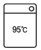
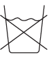
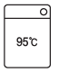
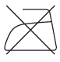
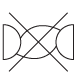

세탁기능사 (2014-01-26 기출문제)
1과목: 세정이론
1. 다음 중 오염이 쉽게 되고 오염제거가 가장 어려운 섬유는?
- 비스코스레이온
- 양모
- 나일론
- 비닐론
(정답률: 78%)

2. 세정액의 청정화 방법에 해당되지 않는 것은?
- 여과
- 흡착
- 증류
- 흡수
(정답률: 70%)
3. 유용성 오점에 대한 설명으로 옳은 것은?
- 매연, 점토 등 유기성의 먼지 등을 말한다.
- 유기용제에 녹으나 물에는 녹지 않는다.
- 물에 용해된 물질에 의하여 생긴 오점이다.
- 유기용제와 물에 녹지 않는다.
(정답률: 74%)
4. 보일러의 운전 중 고장 원인이 아닌 것은?
- 점화 작동 중 수면계에 수위가 나타나지 않는다.
- 스팀에 물이 섞여 나오지 않는다.
- 본체에서 증기나 물이 샌다.
- 작동 중 불이 꺼지며 2~3회 운전 시정상 가동된다.
(정답률: 73%)
5. 계면활성제의 성질이 아닌 것은?
- 한 개의 분자 내에 친수기와 친유기를 가진다.
- 물과 공기 등에 흡착하여 계면장력을 증가시킨다.
- 직물의 습윤 효과를 향상시킨다.
- 직물의 약제에 침투 효과를 증가시킨다.
(정답률: 82%)
6. 오점이 잘 제거되는 섬유의 순서부터 나열한 것은?
- 마 → 견 → 양모 → 면
- 마 → 견 → 면 → 양모
- 양모 → 면 → 견 → 마
- 양모 → 면 → 마 → 견
(정답률: 83%)
7. 클리닝의 효과를 일반적인 효과와 기술적인 효과로 구분할 때 일반적인 효과에 해당하는 것은?
- 세탁물의 내구성을 유지하게 한다.
- 오염물의 종류와 발생 원인을 작업 전에 숙지한다.
- 오염물을 완전하게 제거한다.
- 오염 제거 방법을 분류한다.
(정답률: 76%)
8. 다음 중 대전방지가공을 필요로 하는 섬유는?
- 양모
- 폴리에스테르
- 견
- 면
(정답률: 83%)
9. 게이지의 압력이 5kg/cm2인 보일러의 절대압력(kg/cm2)은?
- 5
- 6
- 10
- 50
(정답률: 93%)
10. 오점의 분류에서 와인이 해당하는 오점은?
- 수용성 오점
- 불용성 오점
- 유용성 오점
- 복합성 오점
(정답률: 86%)
11. 표백을 해서 얻을 수 있는 효과가 아닌 것은?
- 살균 효과를 높인다.
- 산화 변질된 얼룩을 제거한다.
- 섬유의 황변과 회색화를 방지한다.
- 유성 오점과 철분 등을 쉽게 제거한다.
(정답률: 65%)
12. 다음 중 직물의 방충가공에 사용하는 가공제는?
- 아레스린
- 과산화수소
- 콘스타치
- 초산비닐
(정답률: 66%)
13. 보일러에서 0℃의 물 1㏄를 1℃ 올리는데 필요한 열량은?
- 10kcal
- 5kcal
- 2kca
- 1kcal
(정답률: 85%)
14. 계면활성제의 종류 중 세척력이 약해 대전 방지제로 사용하는 것은?
- 음이온계 계면활성제
- 양이온계 계면활성제
- 비이온계 계면활성제
- 양성계 계면활성제
(정답률: 85%)
15. 석유계 용제의 장점으로 틀린 것은?
- 세정시간이 짧다.
- 기계부식에 안전하다.
- 독성이 약하고 값이 싸다.
- 약하고 섬세한 의류에 적당하다.
(정답률: 84%)
16. 용해력 비중이 크므로 세정시간이 짧고 상압으로 증류할 수 있는 용제는?
- 퍼클로로에틸렌
- 삼염화에탄
- 이소프로필알코올
- 사염화탄소
(정답률: 90%)
17. 방충제로서 효력이 가장 빠르고 살충력이 강한 것은?
- 파라핀
- 파라디클로로벤젠
- 나프탈렌
- 장뇌
(정답률: 64%)
18. 오점의 부착 상태 중 화학섬유에 먼지가 부착하는 경우가 해당하는 것은?
- 유지 결합에 의한 부착
- 분자 간 인력에 의한 부착
- 정전기에 의한 부착
- 기계적 부착
(정답률: 65%)
19. 다음 중 수관보일러에 해당되는 형식이 아닌 것은?
- 자연순환식
- 강제식순환식
- 관류식
- 노통연관식
(정답률: 75%)
20. 드라이클리닝에서 수용성 오점의 세척력을 보완하고 재오염을 방지하기 위해 용제에 첨가하는 것은?
- 산
- 알칼리
- 드라이소프
- 합성세제
(정답률: 66%)
2과목: 기술관리
21. 형태안정과 방충성 등은 의복의 기능 중 어디에 포함되는가?
- 위생상의 성능
- 실용적인 성능
- 감각적 성능
- 관리적 성능
(정답률: 66%)
22. 생산성과 제품의 질 향상을 위해 환경에 적합한 적정 조명 중 가장 높은 조명 강도가 필요한 곳은?
- 사무실
- 저장창고
- 휴게실
- 화장실
(정답률: 85%)
23. 세탁 방법 중 계면활성제가 첨가된 유기용제에 물이 가용화되면 수용성 오점을 제거하는데 보다 좋은 효과를 나타내는 것은?
- 차지법
- 검화법
- 석회 소다법
- 형광증백방법
(정답률: 77%)
24. 얼룩빼기 방법 중 물리적 얼룩빼기 방법이 아닌 것은?
- 표백제법
- 분산법
- 기계적 힘을 이용하는 방법
- 흡착법
(정답률: 66%)
25. 다림질의 3대 요소가 아닌 것은?
- 온도
- 압력
- 수분
- 시간
(정답률: 93%)
26. 마무리 작업의 주의사항으로 틀린 것은?
- 섬유의 적정온도보다 다리미 온도가 높으면 황변이 일어날 수 있다.
- 진한 색상의 의복은 섬유 소재에 관계없이 천을 덮고 다리는 것이 좋다.
- 표면 처리되지 않은 피혁제품의 스팀처리는 절대 금지해야 한다.
- 편성물은 신축성이 좋아 인체프레스기를 사용하여야 한다.
(정답률: 61%)
27. 드라이클리닝의 처리 공정 중 전처리에 대한 설명으로 옳은 것은?
- 전처리는 용제를 조정하는 공정이다.
- 일반적으로 스프레이법과 브러싱법이 있다.
- 본 세탁에서 쉽게 제거되는 오점의 처리공정이다.
- 브러싱할 때는 옷감의 털이 다소 일어나더라도 상관없다.
(정답률: 62%)
28. 드라이클리닝의 장점이 아닌 것은?
- 기름얼룩 제거가 쉽다.
- 이염이 되지 않는다.
- 용제가 저가이다.
- 형태변화가 적다.
(정답률: 49%)
29. 다음 중 웨트클리닝을 해야 하는 것이 아닌 것은?
- 합성피혁제품
- 안료 염색된 의복
- 고무를 입힌 의복
- 슈트나 한복
(정답률: 86%)
30. 론드리 공정 중 산욕의 주의사항이 아닌 것은?
- 식물성 섬유는 산에 약하므로 산은 적당하게 사용한다.
- 온도는 상온에서 20~30분간 처리한다.
- 산을 넣을 때 직접 천에 닿지 않도록 한다.
- 온도를 올리면 산의 작용이 상승하므로 온도는 너무 올리지 않는다.
(정답률: 64%)
31. 드라이클리닝 기계에 대한 설명 중 옳은 것은?
- 합성용제용 기계는 완전 방폭형 구조이어야 한다.
- 용제를 청정, 회수, 재사용할 수 있어야 한다.
- 석유계 용제용 기계는 용제의 누출을 적게 해야 한다.
- 용제 회수율이 낮고 부식이 잘되는 재질이어야 한다.
(정답률: 50%)
32. 드라이클리닝의 세정 공정 중 매회 세정때마다 세정액을 교체하여 세탁하는 방법은?
- 차지시스템(Charge System)
- 배치시스템(Batch System)
- 논차지시스템(Non-charge System)
- 배치 차지시스템(Batch Charge System)
(정답률: 74%)
33. 우리나라가 사용하는 경도 표시법은?
- 미국식
- 영국식
- 러시아식
- 독일식
(정답률: 88%)
34. 론드리의 세탁순서로 옳은 것은?
- 애벌빨래 → 본빨래 → 표백처리 → 헹굼 → 산욕 → 풀먹임 → 탈수 → 건조
- 애벌빨래 → 본빨래 → 헹굼 → 산욕 → 표백처리 → 풀먹임 → 탈수 → 건조
- 애벌빨래 → 헹굼 → 본빨래 → 산욕 → 표백처리 → 풀먹임 → 탈수 → 건조
- 애벌빨래 → 헹굼 → 본빨래 → 산욕 → 풀먹임 → 표백처리 → 탈수 → 건조
(정답률: 83%)
35. 론드리의 장점에 대한 설명 중 틀린 것은?
- 세탁온도가 높아 세탁효과가 좋다.
- 알칼리제를 사용하므로 오점이 잘 빠진다.
- 표백이나 풀먹임이 효과적이며 용이하다.
- 마무리 시간이 짧다.
(정답률: 79%)
36. 섬유를 불꽃에 넣었을 때 녹으면서 서서히 타면서 약간 달콤한 냄새가 나는 섬유는?
- 면
- 마
- 비스코스레이온
- 폴리에스테르
(정답률: 76%)
37. 폴리우레탄계 섬유에 해당하는 것은?
- 나일론
- 스판덱스
- 비닐론
- 사란
(정답률: 67%)
38. 다음 중 양모섬유만이 가지고 있는 성질은?
- 흡습성
- 축융성
- 대전성
- 탄성
(정답률: 67%)
39. 가죽의 처리공정을 순서대로 나열한 것은?
- 물에 침지 → 산에 담그기 → 제육 → 석회침지 → 분할 → 때빼기 → 탈회 및 효소분해 → 탈모 → 유성
- 물에 침지 → 제육 → 탈모 → 석회침지 → 분할 → 때빼기 → 탈회 및 효소분해 → 산에 담그기 → 유성
- 물에 침지 → 제육 → 석회침지 → 산에 담그기 → 분할 → 때빼기 → 탈회 및 효소분해 → 탈모 → 유성
- 물 → 탈모 → 탈회 및 효소분해 → 때빼기 → 유성에 침지 → 산에 담그기 → 제육 → 석회침지 → 분할
(정답률: 86%)
40. 천연피혁에 대한 설명 중 틀린 것은?
- 스킨(Skin)은 작은 동물의 원피이다.
- 하이드(Hide)는 큰 동물의 원피이다.
- 진피는 동물 가죽의 맨 아랫부분으로 동물 몸체의 근육과 껍질을 연결해주는 부분이다.
- 표피는 피부표면을 보호해 준다.
(정답률: 76%)
3과목: 클리닝대상품
41. 견섬유의 구조 및 화학적 조성에 대한 설명중 틀린 것은?
- 단면은 삼각형의 2개의 피브로인과 그 주위를 세리신이 감싸고 있다.
- 다른 섬유에 비하여 내일광성이 좋다.
- 견사로 누에고치 6~7개에서 뽑아낸 실을 합한 것이다.
- 물세탁 시 세제로는 중성세제를 사용한다.
(정답률: 62%)
42. 다음 중 인조섬유가 아닌 것은?
- 재생섬유
- 합성섬유
- 무기섬유
- 셀룰로스 섬유
(정답률: 70%)
43. 원단을 사용하여 제조 또는 가공한 섬유 상품의 품질표시 사항이 아닌 것은?
- 섬유의 혼용률
- 길이 또는 중량
- 취급상의 주의
- 번수 또는 데니어
(정답률: 56%)
44. 합성섬유에 대한 설명 중 틀린 것은?
- 해충, 곰팡이에 저항성이 강하다.
- 흡습성이 적다.
- 정전기 발생이 많다.
- 합성섬유의 원료는 주로 목재펄프를 사용한다.
(정답률: 65%)
45. 경사와 위사를 각각 3올 이상으로 교착시켜 완전 조직을 구성하여, 조직점이 빗금 방향으로 연속되어 나타나는 조직은?
- 평직
- 능직
- 수자직
- 여직
(정답률: 74%)
46. 아세테이트 섬유의 염색에 가장 적합한 염료는?
- 직접염료
- 황화염료
- 분산염료
- 반응성염료
(정답률: 81%)
47. 다음 기호의 설명으로 틀린 것은?

- 물의 온도 95℃를 표준으로 세탁할 수 있다.
- 세탁기로 세탁할 수 있다.
- 손세탁이 가능하다.
- 세제 종류에 제한을 받는다.
(정답률: 74%)
48. 가죽처리 공정에서 석회 침지에 해당하는 것은?
- 가죽제품이 깨끗하고 염색이 잘되게 은면에 남아 있는 모근, 지방 또는 상피층의 분해물을 제거하는 것이다.
- 석회에 담그기가 끝난 제품은 알칼리가 높아 가죽재료로 사용하기에 부적당하므로 산, 산성염 등으로 중화시키는 것이다.
- 가죽의 촉감 향상을 위하여 털과 표피층, 불필요한 단백질, 지방과 기름 등을 제거하는 것이다.
- 산을 가하여 산성화하여 가죽을 부드럽게 하는 것이다.
(정답률: 69%)
49. 견섬유의 성질에 대한 설명으로 옳은 것은?
- 가늘고 길며 탄성이 약하고 단섬유이다.
- 레질리언스가 양모섬유보다 우수하다.
- 장시간 보존 중에 습기 등으로 누렇게 변한다.
- 아름다운 광택과 부드러우며 알칼리에 강하다.
(정답률: 53%)
50. 다음 중 거품이 잘 생기지 않는 비누는?
- 라우르산 비누
- 미리스트산 비누
- 올레산 비누
- 스테아르산 비누
(정답률: 63%)
51. 다음 중 피복재료와 만들어진 제품의 사용 용도의 관계가 틀린 것은?
- 나일론 : 스타킹
- 아크릴 : 모포
- 폴리프로필렌 : 속옷
- 비스코스레이온 : 안감
(정답률: 69%)
52. 다음 중 재생 단백질 섬유에 해당하는 것은?
- 비스코스레이온
- 카제인
- 아세테이트
- 폴리에스테르
(정답률: 62%)
53. 피혁의 세탁방법에 대한 설명으로 틀린 것은?
- 치수변화를 최소화하기 위해서 가능한 물세탁을 한다.
- 염료가 용출되어 색상이 변할 수 있으므로 짧은 시간에 세탁을 마쳐야 한다.
- 탈지성이 적은 석유계 용제를 사용하는 것이 좋다.
- 세탁하면 원래의 품질보다 떨어지게 되므로 사용 중 청결을 유지하도록 관리하는 것이 좋다.
(정답률: 61%)
54. 다음 중 평직의 특성으로 옳은 것은?
- 직물이 조밀하고 최소 3올 이상으로 만들어진다.
- 실용적인 옷감으로 사용되고 광목, 옥양목, 포플린 등이 있다.
- 유연하여 겉 옷감으로 사용되고 데님, 개버딘, 서지 등이 있다.
- 신축성이 좋고 구김이 생기지 않는다.
(정답률: 74%)
55. 섬유 제품의 취급에 대한 표시 기호 중 “물세탁은 안 된다”에 해당하는 것은?




(정답률: 90%)
4과목: 공중위생법규
56. 공중위생업자가 폐업신고를 하고자 할 때 영업폐업 신고서를 누구에게 제출하여야 하는가?
- 대통령
- 보건복지부령
- 시·도지사
- 시장, 군수, 구청장
(정답률: 72%)
57. 공중위생감시원의 자격, 임명, 업무범위 기타 필요한 사항은 어느 령으로 정하는가?
- 시·도지사령
- 보건복지부령
- 국무총리령
- 대통령령
(정답률: 72%)
58. 세제를 사용하는 세탁용 기계의 안전관리를 위하여 밀폐형이거나 용제회수기가 부착된 세탁용기계를 사용하지 아니한 때 2차 위반 시 행정처분 기준은?
- 개선명령
- 영업정지 5일
- 영업정지 10일
- 영업장 폐쇄명령
(정답률: 68%)
59. 공중위생영업자의 지위를 승계한 자가 보건복지부령이 정하는 바에 따라 시장, 군수 또는 구청장에게 신고하여야 할 기간은?
- 1일 이내
- 7일 이내
- 1월 이내
- 3월 이내
(정답률: 83%)
60. 공중위생관리법이 규정하고 있는 세탁업의 정의로 옳은 것은?
- 세제를 사용하여 의류를 깨끗이 세탁하는 영업
- 의류 기타 섬유제품이나 피혁제품 등을 세탁하는 영업
- 용제를 사용하는 고객이 맡긴 의류를 청결하게 하는 영업
- 피혁제품을 용제만을 사용하여 끝손질 작업하거나 세탁하는 영업
(정답률: 67%)